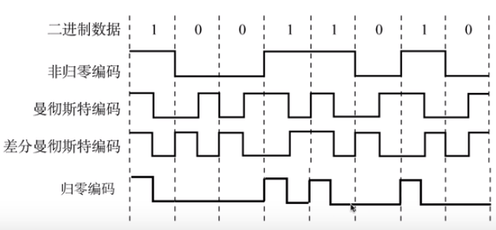
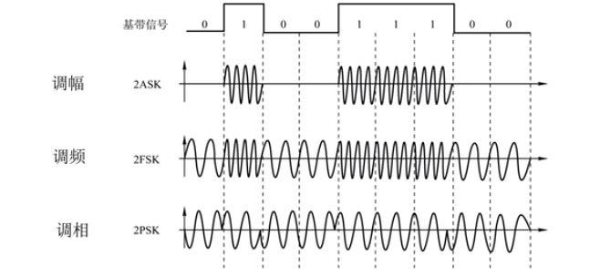

第二章 物理层
物理层考虑的是怎样才能在连接各种计算机的传输媒体上传输数据，而不是指具体的传输媒体。物理层为数据链路层屏蔽了各种传输媒体的差异，使数据链路层只需要考虑如何完成本层的协议和服务，而不必考虑网络具体的传输媒体是什么。
物理层的主要任务
物理层的主要任务是确定与传输媒体接口有关的一些特性：
- 机械特性：指明接口所用接线器的形状和尺寸、引脚数目和排列、固定和锁定装置。
- 电气特性：指明在接口电缆的各条线上出现的电压的范围。
- 功能特性：指明某条线上出现的某一电平的电压表示何种意义。
- 过程特性：指明对于不同功能的各种可能事件的出现顺序。
信号的传输方式
1. 串行传输与并行传输
- 串行传输：比特一个接一个在一根传输线上进行传输。适合远距离传输，计算机网络采用这种传输。（速度慢、费用低，适合远距离）
- 并行传输：多个比特同时在多根传输线上传输。不适合远距离传输，成本太高。计算机内部采用这种传输。（速度快、费用高，适合远距离）
2. 同步传输与异步传输
- 同步传输：比特一个接着一个传输，中间没有间隔，各比特持续时长相等。需要收发双方时钟同步，有两种方法。
- 外同步：在收发双方之间添加一条单独的时钟信号线。
- 内同步：发送端将时钟同步信号编码到发送数据中一起传输（例如曼彻斯特编码）。
- 异步传输 以字节为单位进行传输，字节之间的间隔不固定，但每个字节内的比特持续时长是相等的。 换句话说，字节间异步，比特间仍是同步的。为此，需要给每个字节添加起始位和结束位。
3. 单工、半双工以及全双工传输
- 单工：单向通信，例如广播。（单向通信）
- 半双工：双向交替通信（不能同时），例如对讲机。（双向交替通信）
- 全双工：双向同时通信，例如电话。（双向同时通信）
数据通信中的常用术语
消息（message）：需要计算机处理的文字、图片、音频以及视频等统称为消息。
数据（data）：是运送消息的实体。计算机只能处理二进制数据。
信号：数据的电磁表现
- 数字信号/连续信号
- 模拟信号/离散信号
基带信号：来自信源的原始电信号称为基带信号。
- 数字基带信号：例如在计算机内部，CPU与内存之间所传输的信号。
- 模拟基带信号：例如，麦克风采集到声音后所产生的音频信号。
调制：基带信号往往包含许多低频成分，甚至有直流成分，而许多信道不能传输这种低频分量或直流分量，因此必须进行调制。
- 基带调制/编码：仅仅对信号的波形进行变换，使它能与信道特性相适应，变换后的信号任然是基带信号。（数字信道，基带传输）
- 带通调制：使用载波进行调制，把基带信号的频率范围搬移到较高的频段，并转换为模拟信号，这样就能更好的在模拟信道中传输。经过载波调制后的信号为带通信号。（模拟信道，宽带传输）
编码
两类编码
- 数字信号转换为另一种数字信号， 在数字信道中传输。
- 模拟信号转换为数字信号 ，在数字信道中传输。
常用编码

- 不归零编码（正1负0）
- 在整个码元时间内不会出现零电平
- 存在同步问题，需要额外一根传输线来传输时钟信号，使发送方和接收方同步。
- 对于计算机网络，宁愿利用这根传输线传输数据信号，而不是传输时钟信号。
- 归零编码（每一码元内都要归为0）
- 每个码元传输结束后信号都要“归零”，所以接收方只要在信号归零后进行采样即可，不需要单独的时钟信号。
- 实际上，归零编码相当于把时钟信号用“归零”方式编码在了数据之内，这称为“自同步”信号。
- 但是，归零编码中大部分的数据带宽，都用来传输“归零”而浪费掉了。
- 曼彻斯特编码（前高后低、前低后高分别代表0、1（或1、0））
- 在码元中间时刻发生电平跳变，既表示时钟，也表示数据
- 正跳变表示1或0，负跳变表示0或1，可自行定义
- 传统以太网（10Mb/s）使用该编码
- 差分曼彻斯特编码(同1异0)
- 在码元中间时刻发生电平跳变，跳变仅表示时钟。
- 码元开始处电平是否发生变化表示数据。
- 比曼彻斯特编码变化少，更适合较高的传输速率。
- 不归零编码（正1负0）
调制
两类调制
数字信号转换为模拟信号，在模拟信道中传输。
模拟信号转换为另一种模拟信号，在模拟信道中传输。

基本带通调制方法（二元制）
- 调幅AM：即载波的振幅随基带数字信号而变化。
- 所调制的信号由两种不同振幅的基本波形构成。
- 每个基本波形只能表示1比特信息量。
- 调频FM：即载波的频率随基带数字信号而变化。
- 所调制的信号由两种不同频率的基本波形构成。
- 每个基本波形只能表示1比特信息量。
- 调相PM：即载波的初始相位随基带数字信号而变化。
- 所调制的信号由两种不同初相位的基本波形构成。
- 每个基本波形只能表示1比特信息量。
- 调幅AM：即载波的振幅随基带数字信号而变化。
混合调制（多元制）
为了提高信息传输速率，必须采用技术上更为复杂的多元制的振幅相位混合调制方法。例如，将相位与振幅进行混合调制的正交振幅调制QAM。QAM16可以调制出12种相位，每种相位有1或2个种振幅可选。可以调制出16种基本波形，每种波形可以对应表示4个比特。
信道的极限容量
- 造成信号失真的因素
- 码元传输速率（越高越失真）
- 信号传输距离
- 噪声干扰
- 传输媒体质量
- 奈氏准则
在任何信道中，码元传输速率是有上限的，传输速率超过此上限，就会出现严重的码间串扰问题，使接收端对码元的判决（即识别）成为不可能。如果信号的频带越宽，也就是能通过的信号高频分量越多，那么就可以以更高的速率传送码元而不出现码间串扰。
理想低通信道的最高码元传输速率
- 2W Baud = 2W 波特 = 2W 码元/秒。其中，W为信道带宽，单位是Hz。
理想带通信道的最高码元传输速率
- W Baud = W 波特 = W 码元/秒。其中，W为信道带宽，单位是Hz。
注意
- 实际的信道所能传输的最高码元速率，要明显低于奈氏准则给出的这个上限值。这是因为实际信道还会受到其他很多因素干扰（例如噪声干扰、信号衰减、传输媒体质量等）。
- 要提高信息传输速率（比特率），就必须设法使每一个码元能携带更多个比特的信息量。这需要采用多元制。
- 并不是无限制提高每个码元携带的比特数量，就可以无限制地提高信息的传输速率。因为信道的极限信息传输速率还要受限于实际的信号在信道中传输时的信噪比。
- 香农公式
香农公式指出了信道的极限传输速率。
- 信噪比：信号的平均功率和噪声的平均功率之比
- 两种表示方法
- S/N
- 信噪比(dB) = 10 log10(S/N)(dB)
- 两种表示方法
- 信道的极限传输速率：c = W x log2 (1 + S/N)
- 注意
- 在实际信道上能够达到的信息传输速率要比该公式的极限传输速率低不少。这是因为在实际信道中，信号还要收到其他一些损伤，如各种脉冲干扰、信号在传输中的衰减和失真等，这些因素在香农公式中并未考虑。
- 信道带宽或信道中信噪比越大，信息的极限传输速率越高。
- 奈氏准则和香农公式的意义
- 在信道带宽一定的情况下，根据奈氏准则和香农公式，要想提高信息的传输速率就必须采用多元制（更好的调制方法）和努力提高信道中的信噪比。
- 自从香农公式发表后，各种新的信号处理和调制方法就不断出现，其目的都是为了尽可能地接近香农公式给出的传输速率极限。
物理层下的传输媒体
传输媒体：也叫为传输介质或传输媒介，他就是数据传输系统中在发送器和接收器之间的物理通路，可分为引导型传输媒体和非引导型传输媒体。
引导型传输媒体
- 同轴电缆
- 基带同轴电缆（50欧） 用于数字传输，过去用于局域网，现在局域网领域采用双绞线。
- 宽带同轴电缆（75欧） 用于模拟传输，目前主要用于有线电视。
- 双绞线
- 目前的家用以太网，最低应选用超5类（5E）双绞线。
- 屏蔽双绞线（STP）比非屏蔽双绞线（UTP）具有更好的抗干扰性能，但价格也更贵。
绞合的作用：
- 抵御部分来自外界的电磁干扰
- 减少相邻导线的电磁干扰
- 光纤
- 多模光纤：存在多条不同角度入射的光线在一条光纤中传输。
- 光在多模光纤中不断全反射向前传输
- 由于色散问题，光在多模光纤会产生脉冲展宽的问题
- 多模光纤只适用于近距离传输（建筑物内）
- 多模光纤对光源要求不高。可采用便宜的发光二极管作为光源。相应的，可采用光电二极管来检测光脉冲。
- 单模光纤：
- 单模光纤的直径仅一个光波的波长。光在其中一直向前传播而不发生全反射。
- 单模光纤没有脉冲展宽问题
- 单模光纤适合长距离传输且衰减小，但其制造成本高，对光源要求高。
- 必须使用昂贵的激光发生器作为光源。相应的，需要使用激光检波器来检测光脉冲。
- 多模光纤：存在多条不同角度入射的光线在一条光纤中传输。
- 同轴电缆
非引导型传输媒体
- 无线电波：
- 低频LF和中频MF频段，使用地面波传输
- 高频HF和甚高频VHF频段，依靠电离层的反射进行传输
- 微波：
- 直线传播，可以穿透电离层
- 地面100米发生塔，最大视距LOS传输距离为100公里
- 地球同步卫星
- 低轨道卫星
- 红外线
- 点对点传输
- 直线传输、中间不能有障碍物，传输距离短
- 传输速率低（4Mb/s ~ 16Mb/s）
- 笔记本电脑上已经淘汰
- 可见光
- LiFi比WiFi具有更高的传输速率
- 目前还在实验研究阶段
- 无线电波：
常见物理层网络设备
- 中继器：再生和还原信号（再生数字信号）
- 集线器/多口中继器：放大再生信号
宽带接入技术
- ASDL：即非对称数字用户线，用数字技术对现有的模拟点号用户线进行改造。
- 光纤同轴混合网（HFC网）：在有线电视网的基础上开发的。
- FTTx技术：即光纤到x，如光纤到户FTTH，光线到大楼FTTB等。